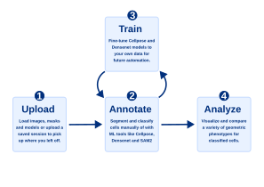

Mycol Workflow
Mycol guides you through a clear, step-by-step pipeline - from raw microscopy images to trained AI models and quantitative cell-level insights. Each stage builds on the last, but you can enter or exit at any point depending on what you already have.
Start by uploading your images and any existing masks or models. Move to the annotation page to segment cells automatically with Cellpose or SAM2, correct any errors interactively, and classify cells manually or with a DenseNet model. If you want better automated results, use the training page to fine-tune a Cellpose or DenseNet model on your own annotated data - newly trained models feed directly back into annotation. Finally, the analysis page lets you visualize and export cell population statistics across classes and experiments. At any point you can download your annotated data, trained models, or a full session restore file for reuse and publication.

Upload Your Data
This is where your analysis begins. Upload the key files Mycol will use in later steps:
- Images (required) - the microscopy or sample images you want to analyze.
- Masks (optional) - segmentation masks that outline cells or regions of interest.
- Cellpose model (optional) - a trained model for automatic cell segmentation. Learn about Cellpose →
- DenseNet model (optional) - a classification model for labeling segmented cells. Learn about DenseNet →
Once uploaded, a summary table shows which images have masks linked, how many cells are highlighted in each image, and any models you've provided.
Segment and Classify Your Cells
The central workspace where annotated datasets are produced. Here you can:
- View images overlaid with their associated cell masks.
- Generate new masks automatically with Cellpose or SAM2.
- Manually edit or correct masks - add, remove, or adjust individual cells.
- Classify cells using an uploaded DenseNet model for automated classification, or by clicking directly on cells in the image for manual labeling.
Once ready, download your dataset or move on to training new models.
Train Your Own Analysis Models
Use the datasets you've created to train new machine learning models. Choose from:
- Cellpose segmentation model - improve or customize how cells are automatically detected and outlined.
- DenseNet classification model - fine-tune how cells are categorized based on their features.
Sensible default parameters are provided, but you can also run hyperparameter optimization to explore how different settings affect model performance.
After training, performance plots show training progress, accuracy, loss, and validation metrics. Trained models can be used immediately in the annotation page or downloaded for reuse.
Get to Know Your Data
Explore and summarize the quantitative results of your analyses. Create and download plots of cell population statistics - such as cell area, perimeter, and other morphological or intensity-based features - grouped by cell class.
Select which classes and characteristics to include, and Mycol generates plots that help you:
- Compare cell size, shape, or intensity between classes or conditions.
- Identify trends in cell populations across multiple images or experiments.
- Quantify variability and relationships among measured features.
Downloadable results include cell counts per class, descriptive statistics, and publication-ready plots.
Export Your Results
The Downloads page lets you package and export everything produced during your session. Choose exactly what to include before preparing the zip:
- Images & Masks - export your images with colored mask overlays, optional per-image class count labels, intensity-normalized images, and cropped cell patch images for every individual segmented cell.
- Tables - CSV files with per-image cell counts and full cell metrics (area, circularity, elongation, and more) for every cell.
- Trained Models - fine-tuned Cellpose or DenseNet weights together with the training dataset, loss curves, and evaluation metrics.
- Session Restore - save a zip you can re-upload to pick up exactly where you left off in a future session.
Click Prepare Download to build the zip, then Download Files to save it locally.